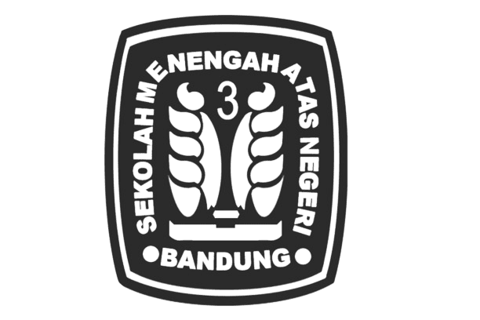

Sejarah - SMAN 3 Bandung</t!itle>
<link rel="stylesheet" href="index (1).css"> <!-- Link ke file CSS yang ada -->
</head>
<body>
<header>
<div class="container-header"></div>
<figure style="margin:0;float: left;">
</div>
<nav>
<ul>

</figure>
<div class="judul">
<h1>Sekolah Menengah Atas Negeri 3 Bandung</h1>
<h6>Knowledge is power but character is more</h6>
<li><a href="index (1).html">Beranda</a></li>
<li><a href="visi-misi (1).html">Visi-Misi</a></li>
<li><a href="prestasi (1).html" target="_blank">prestasi</a></li> <!-- Opens in new tab -->
<li><a href="#">Kegiatan</a></li>
<li><a href="hymne-mars (1).html">hymne-mars</a></li> <!-- Link ke halaman Sejarah -->
<li><a href="sejarah (1).html">Sejarah</a></li> <!-- Link ke halaman Sejarah -->
<li><a href="#">Fasilitas</a></li>
<li><a href="ekstaralikuler (1).html">Ekstrakurikuler</a></li>
</ul>
</nav>
</div>
</header>
<main>
<section>
<h2>Sejarah SMAN 3 Bandung</h2>
<p>
Pada tahun-tahun awal berdirinya, sekolah ini memiliki jumlah siswa yang
terbatas dan hanya menawarkan program pendidikan umum.SMA Negeri 3 Bandung didirikan pada tahun 1961. Sejak awal, sekolah ini
bertujuan untuk menyediakan pendidikan yang berkualitas dan membentuk
karakter siswa agar menjadi generasi penerus bangsa yang berakhlak mulia.
ngan zaman dan tuntutan pendidikan yang semakin tinggi,
SMAN 3 Bandung mulai mengembangkan berbagai program unggulan,
termasuk program akademik dan non-akademik.
SMAN 3 Bandung juga dikenal dengan berbagai prestasi yang diraih
baik di tingkat lokal, nasional, maupun internasional. Berbagai
kegiatan ekstrakurikuler dan organisasi siswa diadakan untuk
mendukung pengembangan minat dan bakat siswa.
Hingga saat ini, SMAN 3 Bandung terus berkomitmen untuk menjadi
sekolah yang berkualitas, dengan mengedepankan pendidikan berbasis
riset, karakter, dan kepedulian lingkungan.
Bangunan sekolah ini merupakan gedung tua yang dibangun pada zaman pemerintahan
Hindia Belanda, dirancang oleh arsitek Charles Prosper Wolff Schoemaker, yang
berfungsi sebagai gedung Hoogere Burgerschool te Bandoeng (HBS) yaitu sekolah
menengah untuk bangsa Belanda dan kalangan ningrat Indonesia (sekolah setaraf
gabungan SMP (MULO) dan SMA (AMS) dengan masa studi 5 tahun).
Gedung ini berdiri di atas tanah seluas 14.240 m2 dengan luas bangunan 8.220 m2
menghadap ke utara (Jalan Belitung) dihuni oleh dua sekolah yaitu SMAN 3 Bandung
di sebelah barat dan SMAN 5 Bandung di sebelah timur.
</p>
<p>
Zaman Belanda (1916 - 1942): Berfungsi sebagai gedung HBS Bandung, sebagai HBS ke-4
yang didirikan pemerintah kolonial setelah HBS di Jakarta (27 November 1860), Surabaya
(November 1875), dan Semarang (1 November 1877).[4] Ketiga HBS tersebut semula bermasa
studi 3 tahun dan sejak 1879 masa studi diperpanjang menjadi 5 tahun (HBS V).
</p>
<p>
Zaman Jepang (1942 - 1945): Berfungsi sebagai markas (tangsi/asrama) tentara Jepang
(Kempetai).
</p>
<p>
Zaman Peralihan (1947 - 1950): Pagi hari berfungsi sebagai Sekolah VHO (Voortgezet
Hoger Onderwijs) - sekolah setaraf SMA berbahasa Belanda dan sore hari sebagai VHO
berbahasa Indonesia. Pada periode itu Bandung dan sekitarnya masih dikuasai NICA sehingga
sistem pendidikan masih mengacu pada sistem yang berlaku sebelum pendudukan Jepang. Gedung
sekolah tersebut pagi hari digunakan siswa berbangsa Belanda yang waktu itu masih banyak
menetap di Bandung, sementara siang-sore harinya digunakan siswa Indonesia.
</p>
<p>
Tahun 1952: Terjadi pemekaran sekolah, SMA 1 B/C menjadi SMA B dan SMA C[A] serta SMA 2 B/C
menjadi SMA 2 B. Siswa bagian C dari eks SMA 1 B/C dan SMA 2 B/C digabungkan ke SMA C. Pada
pagi hari digunakan untuk SMA 2 B (kelak menjadi SMA Negeri 2 Bandung) dan SMA C (kelak menjadi
SMA Negeri 5 Bandung), sedangkan pada sore hari digunakan oleh SMA B (kelak menjadi SMA Negeri 3).
Pada bagian lain SMA 3 A/B eks Parki juga dimekarkan menjadi SMA 3 B dan SMA 3 A.
</p>
</section>
<section class="kontak">
<h2>Kontak Kami</h2>
<p>Alamat: Jl. Belitung No. 8, Bandung, Indonesia</p>
<p>Nomor: 0821325734</p>
<p>Email: <a href="mailto:sman3bandung@gmail.com">sman3bandung@gmail.com</a></p>
</section>
</main>
<footer>
<p>© 2023 SMAN 3 Bandung</p>
</footer>
</body>
</html>